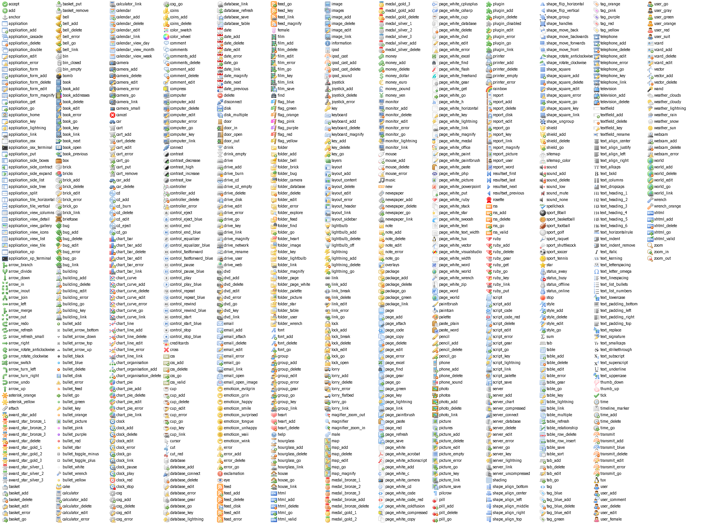

Silk is a smooth, free icon set, containing over 700 16-by-16 pixel icons in strokably-soft PNG format.
Containing a large variety of icons, you're sure to find something that tickles your fancy.
And all for a low low price of $0.00. You can't say fairer than that.
License
I also love to hear of my work being used, feel encouraged to send an email with a link or screenshot of
the icons in their new home to mjames at gmail dot com.
This work is licensed under a Creative Commons Attribution 2.5 License.
This means you may use it for any purpose, and make any changes you like.
All I ask is that you include a link back to this page in your credits
(although a giant link on every page of your website really isn't needed, contact me to discuss specifics).
Source
These Icons come from http://www.famfamfam.com/lab/icons/silk/
readme (html)
readme (txt)
Icons

See also: FamFamFamContrib, DocumentGraphics, FamFamFamSilkCompanion1Icons, FamFamFamFlagIcons, FamFamFamMiniIcons, FamFamFamMintIcons, FamFamFamSilkGeoSilkIcons